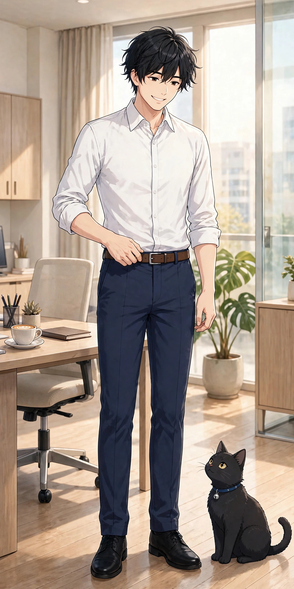

座り仕事でもシワになりにくいパンツの選び方（40代）

ノクス：膝裏のシワ、私が見てるにゃ。
この記事の商品（先に比較）
| 商品 | 価格（税込） | お店 |
|---|---|---|
| 最高パンツ テーパードスラックス | 5,313円 | スーツスクエア楽天市場店 |
| しわシャキ イージースラックス | 4,390円 | STYLE GEAR by ニッセン |
| ストレッチスリム スラックス | 4,378円 | ユナイテッドジャパン楽天市場店 |
| アジャスター付きストレッチスラックス | 4,930円 | ユナイテッドジャパン楽天市場店 |
| ノンアイロン スリムスラックス | 2,950円 | ユナイテッドジャパン楽天市場店 |
| ピンストライプ ノンアイロンスラックス | 3,721円 | ユナイテッドジャパン楽天市場店 |
| ツータック ノンアイロンスラックス | 2,950円 | ユナイテッドジャパン楽天市場店 |
| ウエスト伸びる洗えるスラックス | 3,502円 | ユナイテッドジャパン楽天市場店 |
| 2WAYストレッチ スリムスラックス | 5,478円 | ユナイテッドジャパン楽天市場店 |
| 吸水速乾スリムスラックス | 4,378円 | ユナイテッドジャパン楽天市場店 |
基準1：防シワ・形態安定の表示を確認する
座りジワは、素材の加工で決まる部分が大きいです。商品ページに「防シワ」「ノンアイロン」「形態安定」「リンクルフリー」などの表示があるものを選んでください。元の2点（スーツスクエアとニッセン）は、どちらも防シワをうたっています。スーツスクエアの最高パンツは「着用中シワになりにくく、洗濯後に残りがちなシワも防ぐ」と説明され、ニッセンのしわシャキは「デスクワークでもシワになりにくい」と明記されています。綿100%のものは風合いは良いですが、シワがつきやすいので、ポリエステル混や形態安定加工のあるものを優先してください。
基準2：座って苦しくないストレッチとウエスト
立ったときは平気でも、座るとウエストと太ももが張ります。ストレッチ入りの生地なら、座った姿勢でも突っ張りにくくなります。ニッセンのしわシャキはウエスト総ゴムのイージータイプで、食後やデスクワーク時の窮屈感を逃がす作りです。ベルトループがついているので、ビジネス時はベルトを通してきちんと見せられます。スーツスクエアの方はノータックのテーパードで、セットアップ着用もできます。
基準3：洗えること（ウォッシャブル）で回しやすく
座り仕事のパンツは、毎日履くものだからこそ洗えることが大事です。この2点は自宅の洗濯機で洗えます。洗ったあとアイロンなしで着られるかどうかも確認してください。スーツスクエアはノンアイロン、ニッセンは干すだけでアイロンいらずと説明されています。2本を回すと、1本を洗っている間ももう1本が使えます。
あえて推さないもの
- 防シワ加工のない綿100%のスラックス（座りジワがそのまま残ります）
- ストレッチのない細身のパンツ（座ると太ももが張って苦しくなります）
- ウエストが伸びず、食後に苦しくなるもの（午後の仕事に響きます）
座りジワを減らす座り方と立ち上がり方
座るときは、ポケットの中身（財布・スマホ）を出しておくと、膝裏やお尻のシワが減ります。立ち上がったときは、膝裏を手で軽く払ってから歩き出すと、シワが伸びやすくなります。長時間座りっぱなしより、1時間に1回は立って軽く歩く方が、シワだけでなく体のこわばりにも良いです。デスクワーク後の首・肩のリセットは首・肩のこわばりをリセットにまとめています。
季節の確認（買う前に）
防シワのパンツは、夏向けの薄手・接触冷感のものも多くあります。今回のニッセンの1点は接触冷感つきの夏向け素材です。防シワの仕組み自体は通年使えますが、秋冬の通勤のメインにするなら、暖かさのある素材かどうかも商品ページで確認してください。スーツスクエアの1点は季節の指定がなく、通年使えるタイプです。
購入前のチェック（座る・歩く・かがむ）
- 座ったときにウエストが食い込まないか
- 座ったまま膝を曲げたときに、膝裏の生地が突っ張らないか
- かがんだときに後ろのウエストが下がりすぎないか
- 歩いたときに裾が靴に引っかからないか
この記事の基準に合う商品
特徴：防シワ・ノンアイロン・洗えるスラックス10点。価格は2026年11月24日に商品ページで確認したものです。サイズにより価格が変わるものがあります。


あわせて読みたい：メンズボトムス種類別ガイド／お腹まわりが気になる男性のボトムスの選び方／デスクワーク後の首・肩のこわばりリセット